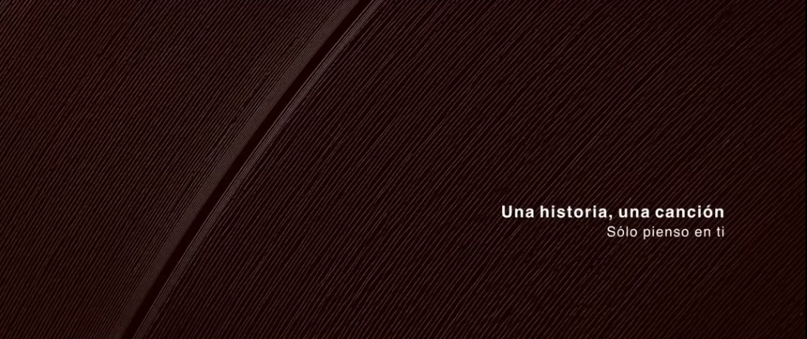
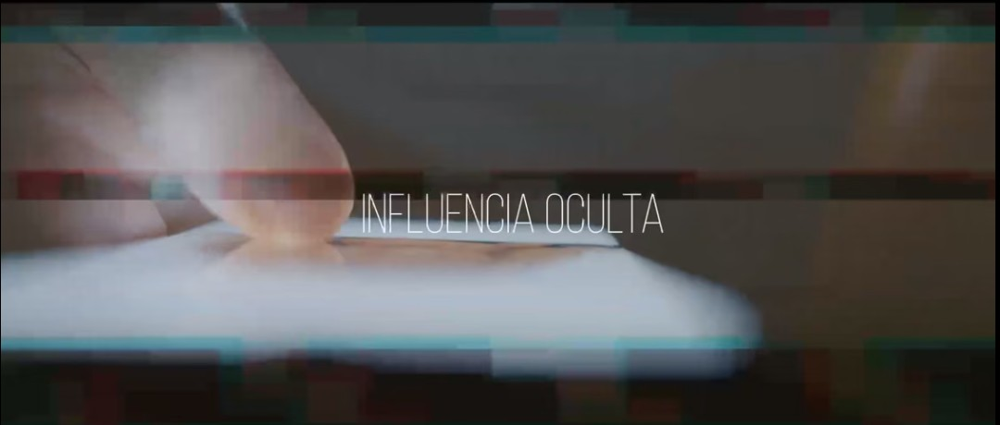
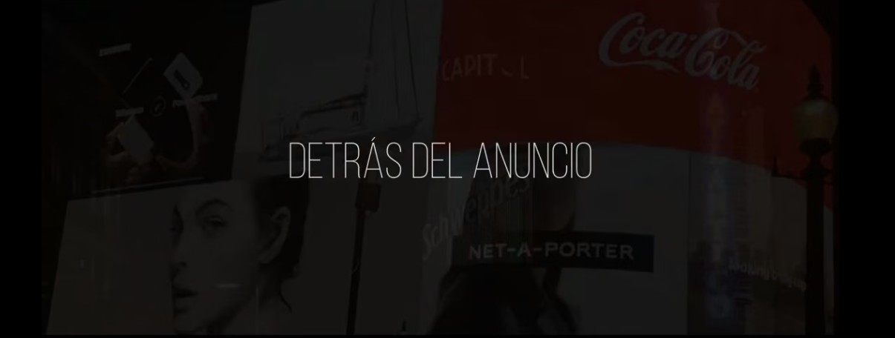

Los últimos guerrilleros
Un documental sobre la memoria histórica y la resistencia de la guerrilla antifranquista en España.
VER DOCUMENTALProductora Audiovisual Independiente
Narrativas cinematográficas, documentales y piezas de autor con una estética íntima, elegante y contemporánea.
Ver trabajos
Un documental sobre la memoria histórica y la resistencia de la guerrilla antifranquista en España.
VER DOCUMENTAL

Una mirada crítica sobre la influencia invisible que condiciona nuestras decisiones.
VER DOCUMENTAL
Un recorrido por los mecanismos creativos y estratégicos que existen detrás de la publicidad.
VER DOCUMENTALSobre Luzonda Films
Luzonda Films es una productora audiovisual independiente especializada en cine documental y proyectos de autor. Cada producción nace del compromiso con la autenticidad, una narrativa cuidada y una realización cinematográfica de alta calidad. Nuestro objetivo es crear historias que emocionen, permanezcan en la memoria y transmitan una mirada única sobre la realidad.

Contacto
¿Tienes un proyecto documental o audiovisual?
Estaremos encantados de escucharte.